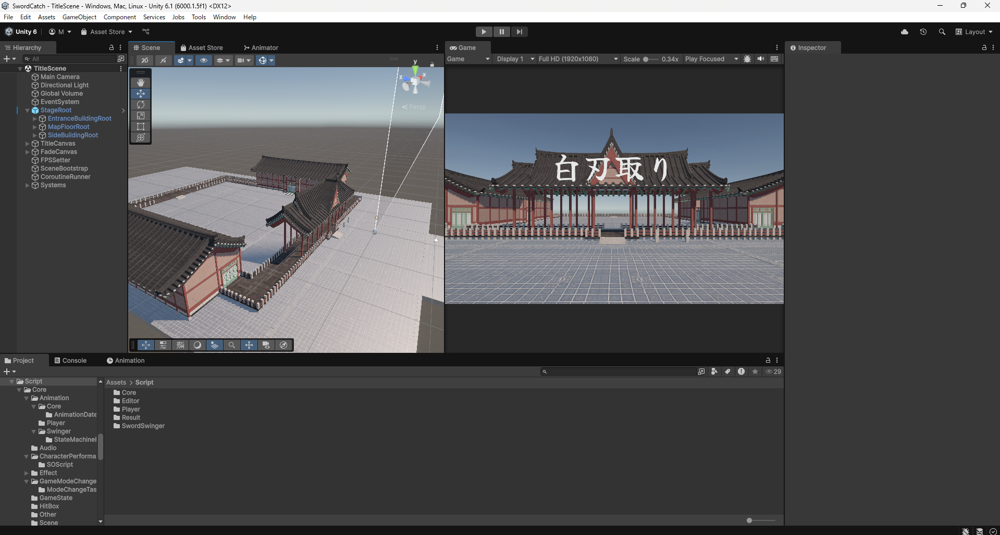

制作4作品目「白刃取り」
内容:真剣白刃取り
制作時期:2025/11 ~ 2026/7
実時間:250時間
制作人数:1人
当時HADESⅡにはまっており、HADESⅡのゲームデザインを分析し、
ユーザーの思考が良い方向に回転し続けること、明確に気持ちいい瞬間があることが
重要だと感じ、ユーザーの思考を「いつ刀が降り下ろされるか」、
「耳と目どちらでわかるものか」という思考で退屈にさせず、2連続ないしは3連続で
白刃取りに成功したタイミングをSEと成長感を感じさせることで一番気持ちいい瞬間にしました
また難易度調整でユーザーを没入させることを、反射神経を使うことで比較的簡単に実現しました。
HADESⅡでゲームオーバーになった時なぜあれほど悔しいのかという事を、
豪華で壮大なステージでかっこよくて威厳のあるボスと対面することで自身が大舞台にたっていると
認知させ大舞台で失敗するという悔しさを無意識に感じさせているのではないかと分析し、
それを踏襲し、背景のマップを10時間以上かけて細かく作っていきました。
またキャラクターのアニメーションも自作し、挑発するようにお辞儀する動きや
生理的振戦なども再現しました。
コーディングに関しては制作初期は構造を複雑に細分化することに
とても拘っていましたが、現場のプログラマーの方のアドバイスを受けて
本当に良いコードとはなにかを自問自答し、シンプルなコードで処理負荷を抑え実装できる人
こそ本当に上手いプログラマーだと感じ、3年生になってからはまだまだ複雑なコードを
シンプルにすることに時間を多く使いました。

マップはアセットを色々組み合わさて作ったので、とても頑張りました。
ゲームデザインももちろん頑張ったのですが、記憶に残っているのは
コーディングに関してで、最初はMiSideのようなバリエーション豊富な
ゲームにしたかったので色んなモードに対応できるように、プレイヤーに二重ステートパターンを
使ったのですが、クラスをまたぎまくるしコンストラクタの受け渡しが多すぎて把握するのが難しく
実装に時間がかかりました。
3年生になってコードをシンプルにする際もクラスが多く修正するのが大変でした。

実際にクラスメイトに遊んで貰ったのですが、その反応がとてもよく
家でも遊んでくれてリザルト画面を送ってくれたのがとても嬉しかったです。
現役のプログラマの方にアドバイスを頂いて自身のコードを見つめなおして
どんなコードにするべきか自身の中で指標ができたことはとても自身のためになりました。
MiSideの独自性と面白さに衝撃を受けて、MiSideレベルのゲームを作るぞ！！
と意気込んで制作を始めたのですが、白刃取りに拘り過ぎて結局1ミニゲーム作るので精一杯で、
MiSideなんて夢のまた夢だったので、もっと実装が早くできるようになって
自分が生み出すもののクオリティを上げたいなと思いました。